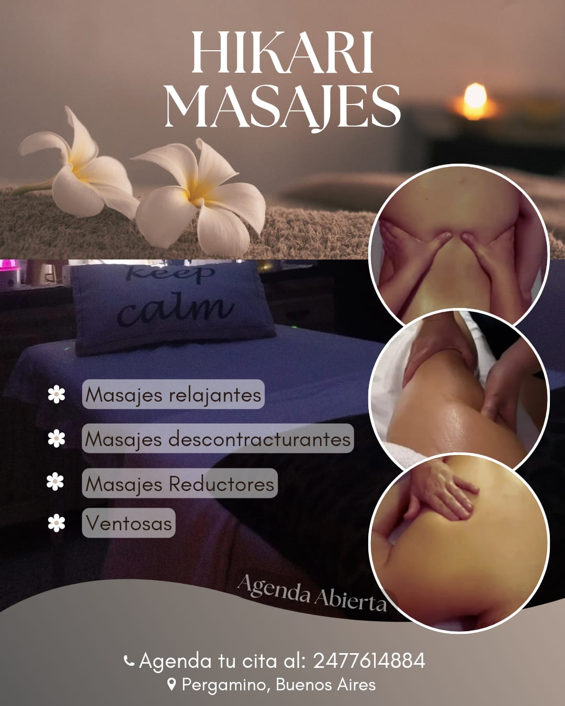
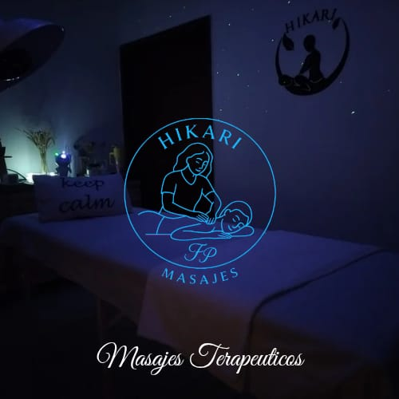
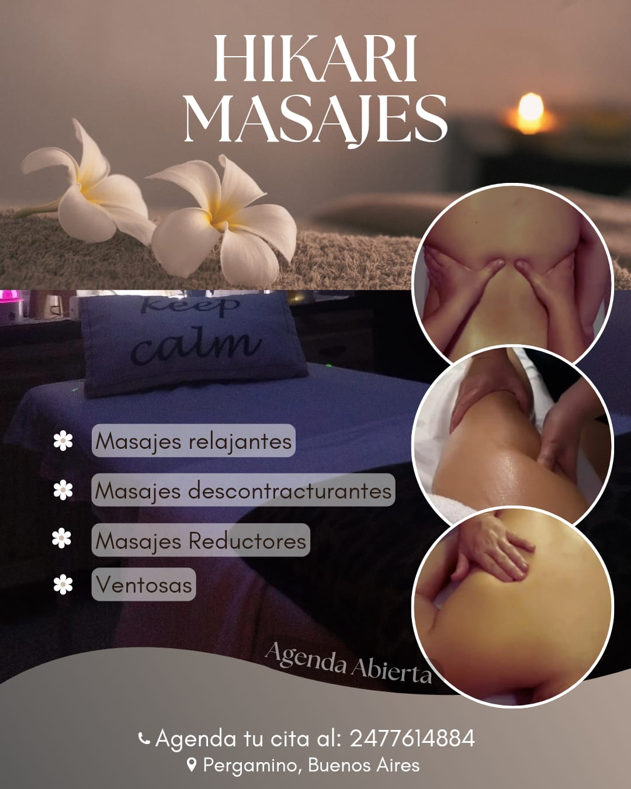
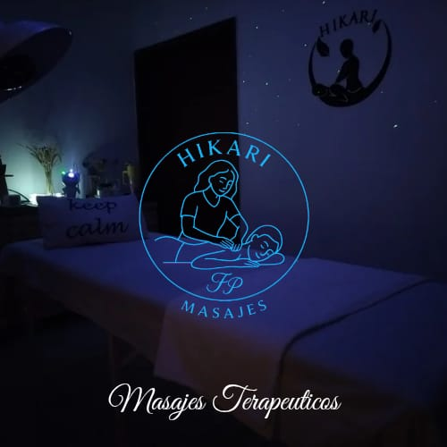

Relajación Integral
Sesión terapéutica de presión suave y movimientos envolventes
que activan el sistema nervioso parasimpático, favoreciendo
la relajación profunda y la regulación del estrés.
Consultar
Masaje Localizado
Enfocado en zonas específicas como espalda, cervicales o piernas.
Alivia tensiones acumuladas y mejora la movilidad muscular.
Consultar
Descontracturante Profundo
Terapia manual orientada a contracturas y sobrecargas musculares.
Favorece la circulación y restablece el equilibrio corporal.
Consultar
Reductor / Modelador
Técnica manual intensa que estimula tejidos y ayuda a mejorar la apariencia
corporal desde una mirada terapéutica integral.
Consultar
 


